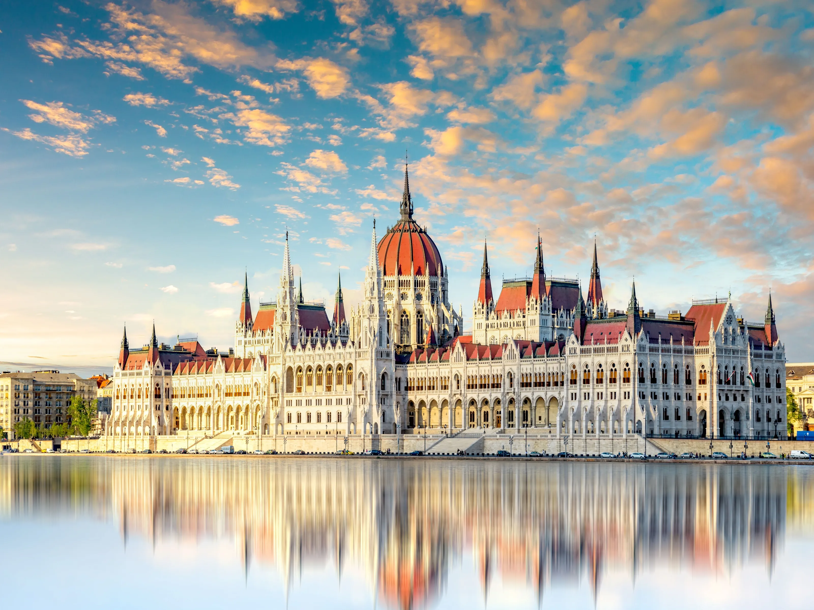

ВИКЕНД ПОНУДА

ВИКЕНД ВО БУДИМПЕШТА
Будимпешта, Унгарија
17.04 - 20.04
Откријте ја прекрасната Будимпешта, еден од најубавите европски градови. Прошетајте покрај Дунав, уживајте во прекрасниот поглед кон Парламентот и откријте ги историските улици на Буда и Пешта. Викендот е совршен за љубителите на архитектурата, културата, добрата храна и незаборавната градска атмосфера.
ВИКЕНД АВАНТУРА
Главниот град на Унгарија и еден од најубавите градови во Европа, препознатлив по Дунав, историските градби и прекрасните панорами. Во текот на турата ќе има можност за прошетка по улицата Ваци и плоштадот Ворошмарти, како и истражување на Будимскиот замок, Рибарската тврдина и историскиот дел на градот.
Една од најпознатите знаменитости и симболи на Будимпешта, сместена покрај брегот на Дунав. Импозантната зграда се издвојува со прекрасната неоготска архитектура и претставува една од највпечатливите градби во градот. Од спротивниот брег се овозможува прекрасен поглед кон Парламентот и можност за фотографирање.
Една од најзначајните и највпечатливи цркви во Будимпешта, посветена на Свети Стефан, првиот крал на Унгарија. Базиликата се наоѓа во срцето на градот и е опкружена со прекрасни плоштади, пешачки улици, кафулиња и ресторани, што ја прави идеална локација за прошетка и разгледување.
Еден од најпознатите симболи на Будимпешта и историскиот мост кој ги поврзува Будим и Пешта преку Дунав. Прошетката преку мостот нуди прекрасни погледи кон реката, Парламентот, Будимскиот замок и панорамата на градот.
Состанок со групата на аеродром во Скопје, 2 часа пред летот. Следува директен лет до Будимпешта и пристигнување на аеродромот. По завршувањето на аеродромските процедури, организиран трансфер до хотелот и сместување. По пристигнувањето следува организирана прошетка низ централниот дел на градот. Следува посета на плоштадот Ворошмарти и прошетка по познатата улица Ваци, со слободно време за ручек, кафе и индивидуално разгледување. Потоа следува прошетка покрај Дунав и разгледување на Парламентот од спротивниот брег, со можност за фотографирање и уживање во панорамата на градот. Попладнето следува сместување во хотел и време за одмор. Во вечерните часови е предвидена слободна прошетка низ центарот на Будимпешта и можност за вечера во еден од локалните ресторани. Ноќевање во хотел.
Појадок во хотелот и организирано разгледување на Будимпешта. Следува посета на Будимскиот замок и прошетка низ историскиот дел на Будим. Потоа следува посета на Рибарската тврдина, од каде што се овозможува прекрасен панорамски поглед кон Дунав и Пешта. Предвидено е време за фотографирање и слободна прошетка во околината. Следува посета на црквата Матијаш и слободно време за ручек. Во попладневните часови групата се враќа кон центарот преку Ланчен мост, со можност за прошетка покрај Дунав и фотографирање. Вечерта е слободна за вечера и индивидуални активности. Ноќевање во хотел.
Појадок во хотелот и одјавување согласно предвиденото време. Следува утринска прошетка до Парламентот и разгледување на една од најпознатите знаменитости на Будимпешта. Потоа следува посета на Базиликата Свети Стефан и слободно време за кафе, последен шопинг и индивидуално разгледување во центарот. Пред поаѓањето е предвидена кратка прошетка покрај Дунав и слободно време за фотографирање. Во попладневните часови следува собирање на групата и организирано поаѓање кон аердром. По завршување на аеродромските процедури следи директен лет кон Скопје. По пристигнувањето и преземањето на багажот завршува организираното патување.